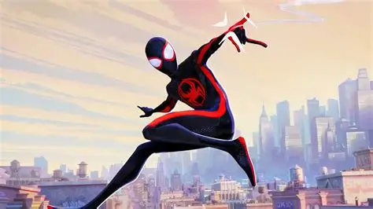

Miles Morales
Miles Gonzalo Morales is a Brooklyn Visions Academy student who was bitten by a radioactive spider and gained spider-like abilities.
Initially not wanting to be a hero, he was forced to take up the mantle of Spider-Man after the death of Peter Parker.
After finding the strength he needed to save the city from the Super-Collider with the help of the Spider-Gang,
Miles became the new protector of Brooklyn as the ultimate Spider-Man.
More Information about Miles Morales
